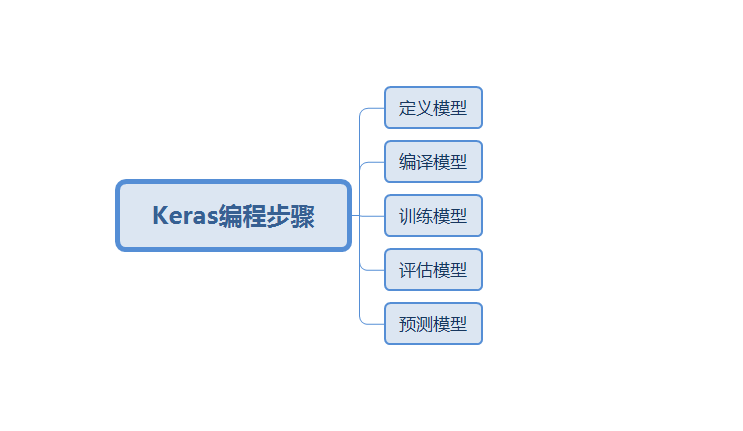
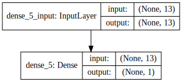
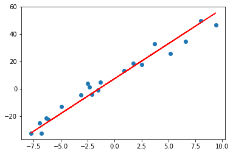
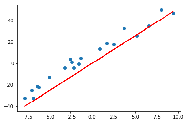
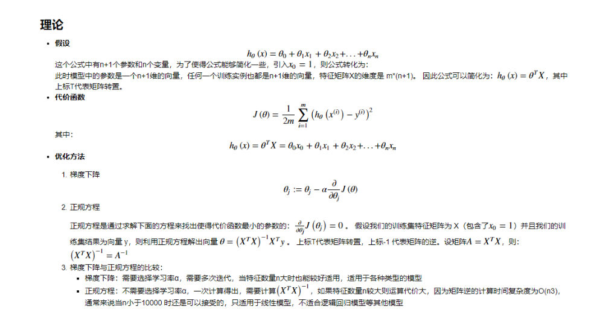
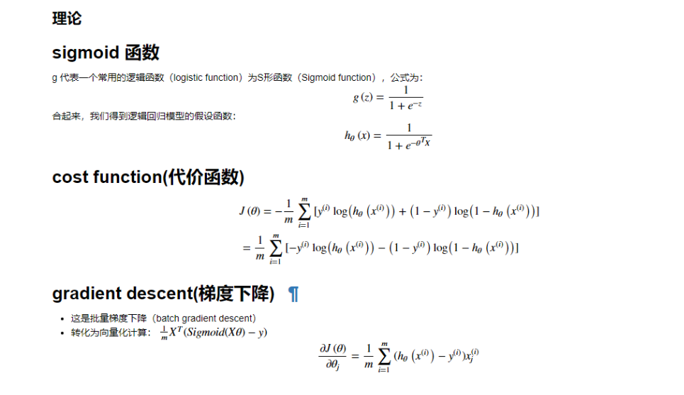
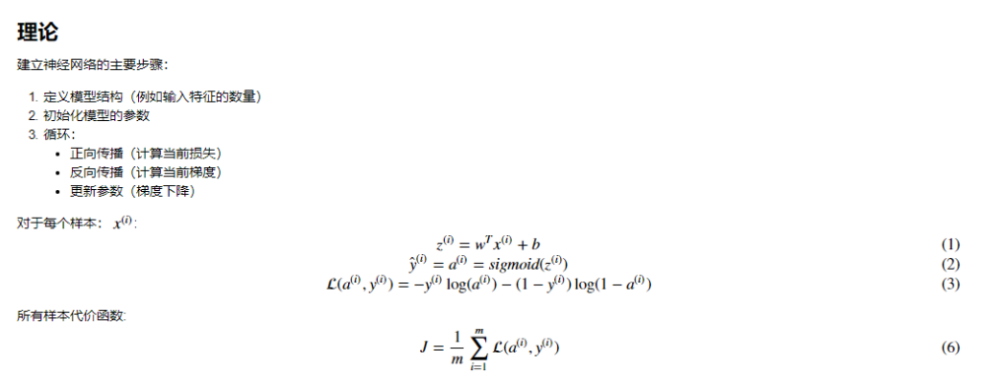

为什么选择
- 编程友好：在学习深度学习原理过程中，最好自己代码实践，keras极度适合初学者，能快速实验
安装
- Anaconda 和 Jupyter notebook已成为数据分析的标准环境
ps:直接导入环境配置文件，命令conda env update -f=keras_environment.yml

定义模型
Sequential()模型
1
2
3model = Sequential()
model.add(Dense(32, input_shape=(784,)))
model.add(Activation('relu'))Functional()模型
1
2
3a = Input(shape=(32,))
b = Dense(32)(a)
model = Model(inputs=a, outputs=b)
编译模型
1 | model.compile(optimizer='sgd', loss='mse') |
必须传入损失函数和优化算法
训练模型
1 | history = model.fit(X, y, batch_size=10, epochs=100) |
使用反向传播算法对数据进行训练
评估模型
1 | loss, accuracy = model.evaluate(X, y) |
模型预测
1 | predictions = model.predict(x) |
线性回归
Keras对波士顿房价进行回归
- 定义模型假设为
y=Wx+b - 编译模型时选择损失函数为均方误差函数，优化算法选择随机梯度下降
- 传入数据以及迭代此时
- 均方误差函数进行评估
- 进行预测
1 | from keras.datasets import boston_housing |
Epoch 1/20
404/404 [==============================] - 0s 527us/step - loss: 13144.4827 - mean_squared_error: 13144.4827
Epoch 2/20
404/404 [==============================] - 0s 40us/step - loss: 3041.2153 - mean_squared_error: 3041.2153
Epoch 3/20
404/404 [==============================] - 0s 45us/step - loss: 668.1933 - mean_squared_error: 668.1933
Epoch 4/20
404/404 [==============================] - 0s 42us/step - loss: 255.8141 - mean_squared_error: 255.8141
Epoch 5/20
404/404 [==============================] - 0s 40us/step - loss: 185.1011 - mean_squared_error: 185.1011
Epoch 6/20
404/404 [==============================] - 0s 40us/step - loss: 170.2183 - mean_squared_error: 170.2183
Epoch 7/20
404/404 [==============================] - 0s 40us/step - loss: 165.1749 - mean_squared_error: 165.1749
Epoch 8/20
404/404 [==============================] - 0s 37us/step - loss: 161.2603 - mean_squared_error: 161.2603
Epoch 9/20
404/404 [==============================] - 0s 35us/step - loss: 151.0976 - mean_squared_error: 151.0976
Epoch 10/20
404/404 [==============================] - 0s 35us/step - loss: 147.1785 - mean_squared_error: 147.1785
Epoch 11/20
404/404 [==============================] - 0s 40us/step - loss: 140.4976 - mean_squared_error: 140.4976
Epoch 12/20
404/404 [==============================] - 0s 42us/step - loss: 140.6603 - mean_squared_error: 140.6603
Epoch 13/20
404/404 [==============================] - 0s 40us/step - loss: 132.6787 - mean_squared_error: 132.6787
Epoch 14/20
404/404 [==============================] - 0s 40us/step - loss: 128.5385 - mean_squared_error: 128.5385
Epoch 15/20
404/404 [==============================] - 0s 37us/step - loss: 123.0882 - mean_squared_error: 123.0882
Epoch 16/20
404/404 [==============================] - 0s 40us/step - loss: 118.4096 - mean_squared_error: 118.4096
Epoch 17/20
404/404 [==============================] - 0s 40us/step - loss: 123.5432 - mean_squared_error: 123.5432
Epoch 18/20
404/404 [==============================] - 0s 42us/step - loss: 115.5308 - mean_squared_error: 115.5308
Epoch 19/20
404/404 [==============================] - 0s 40us/step - loss: 112.0784 - mean_squared_error: 112.0784
Epoch 20/20
404/404 [==============================] - 0s 37us/step - loss: 114.4626 - mean_squared_error: 114.4626
102/102 [==============================] - 0s 324us/step
[[15.296406]]
查看模型
1 | from IPython.display import SVG |

1 | ### 单变量线性回归 |
20/20 [==============================] - 0s 1ms/step

1 | # 正规方程求解(没有添加偏置) |


逻辑回归
1 | import numpy as np |
1 | #生成数据 |

神经网络
1 | from keras.models import Sequential |
C:\Users\DataMesh\Anaconda3\envs\py3\lib\site-packages\h5py\__init__.py:36: FutureWarning: Conversion of the second argument of issubdtype from `float` to `np.floating` is deprecated. In future, it will be treated as `np.float64 == np.dtype(float).type`.
from ._conv import register_converters as _register_converters
Using TensorFlow backend.
1 | x_train = np.random.random((1000, 20)) |
(1000, 20) (1000, 10)
Epoch 1/20
1000/1000 [==============================] - 0s 313us/step - loss: 2.3688 - acc: 0.0980
Epoch 2/20
1000/1000 [==============================] - 0s 22us/step - loss: 2.3446 - acc: 0.1000
Epoch 3/20
1000/1000 [==============================] - 0s 20us/step - loss: 2.3213 - acc: 0.1250
Epoch 4/20
1000/1000 [==============================] - 0s 20us/step - loss: 2.3287 - acc: 0.1100
Epoch 5/20
1000/1000 [==============================] - 0s 21us/step - loss: 2.3065 - acc: 0.1140
Epoch 6/20
1000/1000 [==============================] - 0s 20us/step - loss: 2.3219 - acc: 0.1000
Epoch 7/20
1000/1000 [==============================] - 0s 20us/step - loss: 2.3094 - acc: 0.1180
Epoch 8/20
1000/1000 [==============================] - 0s 19us/step - loss: 2.3052 - acc: 0.1100
Epoch 9/20
1000/1000 [==============================] - 0s 19us/step - loss: 2.2990 - acc: 0.1370
Epoch 10/20
1000/1000 [==============================] - 0s 18us/step - loss: 2.2996 - acc: 0.1190
Epoch 11/20
1000/1000 [==============================] - 0s 19us/step - loss: 2.2975 - acc: 0.1320
Epoch 12/20
1000/1000 [==============================] - 0s 19us/step - loss: 2.3026 - acc: 0.1090
Epoch 13/20
1000/1000 [==============================] - 0s 19us/step - loss: 2.2979 - acc: 0.1130
Epoch 14/20
1000/1000 [==============================] - 0s 19us/step - loss: 2.2977 - acc: 0.1200
Epoch 15/20
1000/1000 [==============================] - 0s 20us/step - loss: 2.2874 - acc: 0.1100
Epoch 16/20
1000/1000 [==============================] - 0s 21us/step - loss: 2.2853 - acc: 0.1390
Epoch 17/20
1000/1000 [==============================] - 0s 19us/step - loss: 2.2897 - acc: 0.1330
Epoch 18/20
1000/1000 [==============================] - 0s 19us/step - loss: 2.2823 - acc: 0.1380
Epoch 19/20
1000/1000 [==============================] - 0s 18us/step - loss: 2.2890 - acc: 0.1290
Epoch 20/20
1000/1000 [==============================] - 0s 20us/step - loss: 2.2891 - acc: 0.1260
100/100 [==============================] - 0s 420us/step
_________________________________________________________________
Layer (type) Output Shape Param #
=================================================================
dense_3 (Dense) (None, 64) 1344
_________________________________________________________________
dropout_2 (Dropout) (None, 64) 0
_________________________________________________________________
dense_4 (Dense) (None, 10) 650
=================================================================
Total params: 1,994
Trainable params: 1,994
Non-trainable params: 0
_________________________________________________________________
- 启动tensorboard，代码中加入
1
2
3
4
5
6
7
8
9tb_cb=keras.callbacks.TensorBoard(log_dir='./logs', histogram_freq=1, write_graph=True, write_images=False, embeddings_freq=0, embeddings_layer_names=None, embeddings_metadata=None)
cbks=[];
cbks.append(tb_cb);
model.fit(x_train, y_train,
epochs=20,
batch_size=128,
verbose=0,
validation_split=0.2,
callbacks=cbks)
